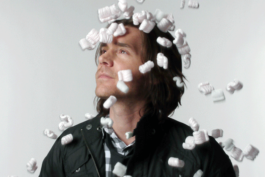
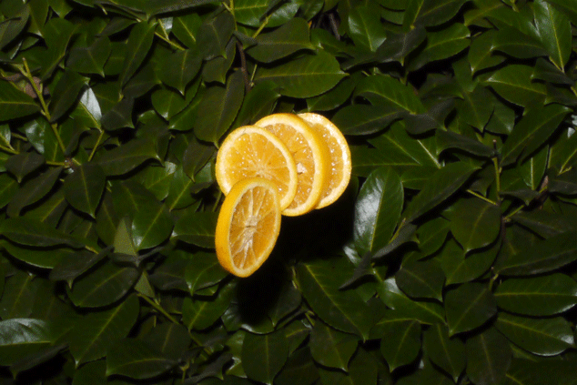
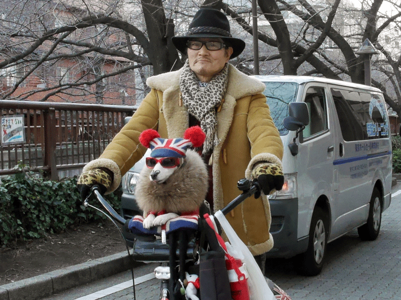
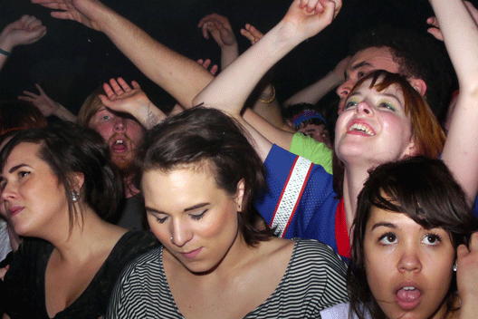
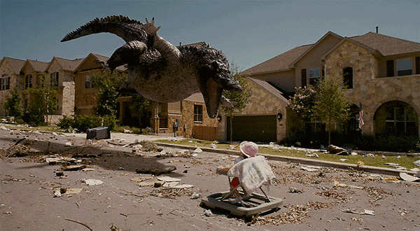

|
One of the ways to produce a 3D effect is to quickly alternate between the images as if taken from the point of view for the two eys. Some people call it Wiggle Stereography. Some examples below (taken from 3ERD and Fuzzy Wobble):      You get a sense of depth from parallax and object occlusion. We want an animated GIF, two frames, using this effect. To make one, you need either a stationary target or two cameras (smartphones?) you can place side by side and shoot at the same time. If you only have one camera, take one shot and move it slightly to the side before taking the second one. The separation between photos should be roughly the same as the distance between your two eyes. This works better if some subjects are closer to you than others, to get that parallax effect going, but not too much, otherwise the images will differ too much. Then it is just a matter of creating the animated GIF. Post a description of the techniques and tools you used to create the GIF and the GIF itself. Be original, tasteful, and, as always, we may ask for improvements/changes before accepting the result, especially if the quality or originality requirements aren't met. |